猫：天打雷劈的好心人…
这个玩偶是认真的吗？ 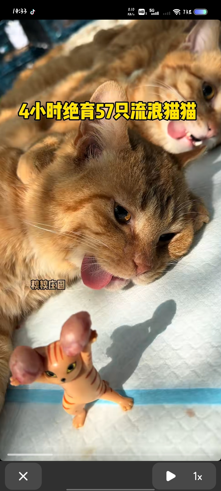
居然还按色号排列整齐[尬笑]猫：我们不要面子的吗[尬笑]
这样的喇叭花[耶] 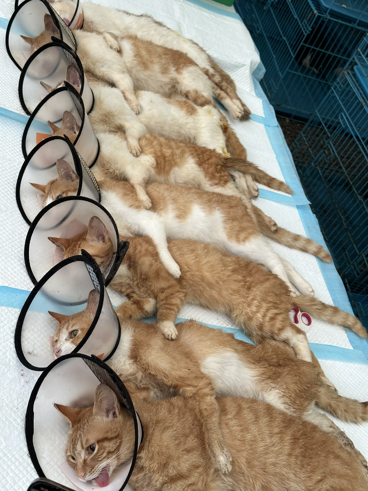
哈哈哈哈哈哈哈，我家楼下的宠物医院，我的两只猫都是在这儿做的绝育🤣。 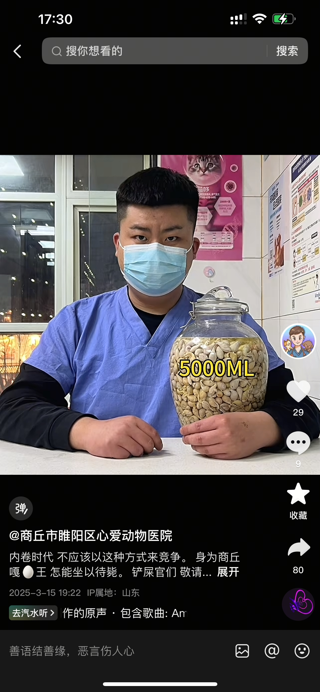
回去之后 🐱:小美，哥不中了[流泪]
放古代，你绝对是敬事房大太监[憨笑]
建议大家都不要吃自己的生肖，我属羊，从来不吃羊肉[微笑][微笑][微笑]
还落了一只小野猫，我给你艾特出来[黑脸]
做成猫粮给它们好好补补[大笑] 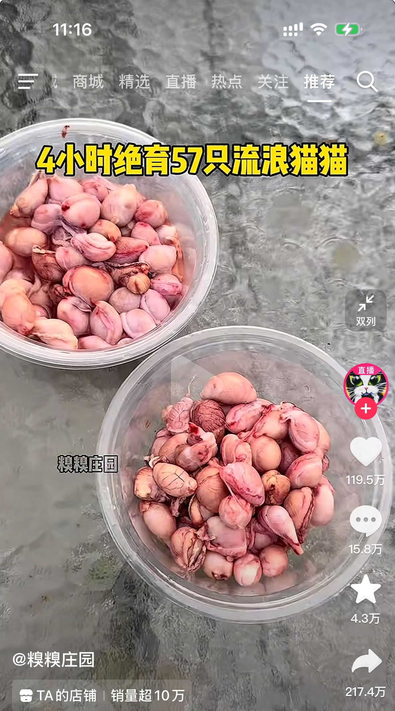
方圆百里的猫
母猫：我们分手吧 公猫：亲爱的，我真的只是出去遛了个弯，补药啊，[苦涩]
谁说男生不会共情
4x60÷57=4.21053分钟，平均四分钟一只，[捂脸]屠宰场里的流水线
一直很怀疑要是一直绝育下去田园猫会不会绝种啊[宕机]
请问，他在团队里负责什么？勾引吗？[看] 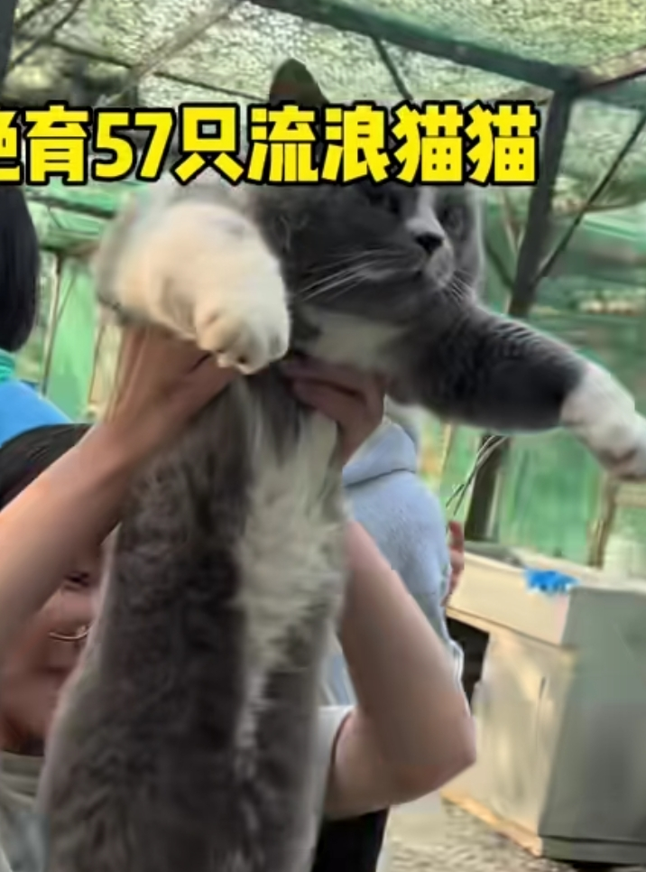
猫：你们这是把宫里的净身房搬出来了？
喵喵：好邪恶的组织，这妥妥的是一场去雄阴谋
[憨笑]。。 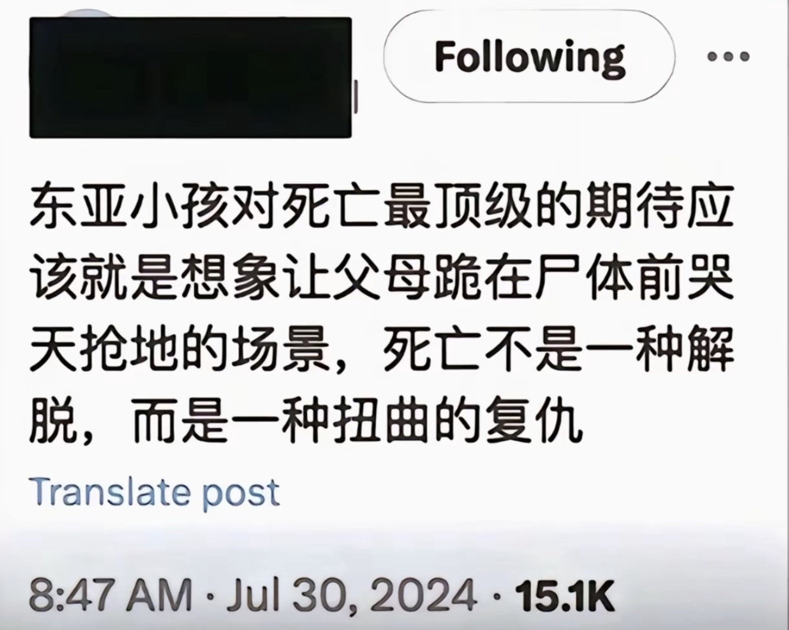
不是大早上的[流泪][流泪][流泪][流泪]
看完不哭是[赞]
曾看过一个很让人深思的问答： “为什么医生养孩子都比较佛系， 老师养孩子却比较严厉？” “因为老师见过最优秀的孩子， 而医生见过最后悔的家长。”
到底是谁发明的读白 真的要哭死了[捂脸]
看过原片 在电影院直接哭崩了[憨笑]朋友把我拖出去的 出去在外面还是哭到停不下来 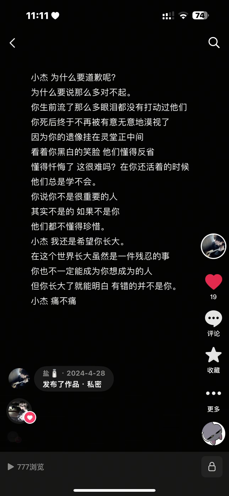
幸亏我哥我俩都是扶不上墙的人[不失礼貌的微笑][不失礼貌的微笑][不失礼貌的微笑]
“原来伤痕都要自带勋章属性，否则就只是无病呻吟的证据”谁懂这句话！
第一人称带人是谁发明的，这么带入[流泪]
哥哥居然不嫉妒弟弟，哥哥依然希望弟弟过得好，不敢想象哥哥是个多么好的人[流泪][赞]
电影里面 讲述的视角是弟弟 反转后 死的却是哥哥
“我死了，所有人都开始爱我了”[流泪][流泪][流泪]
这个是我见过最刀的拥抱 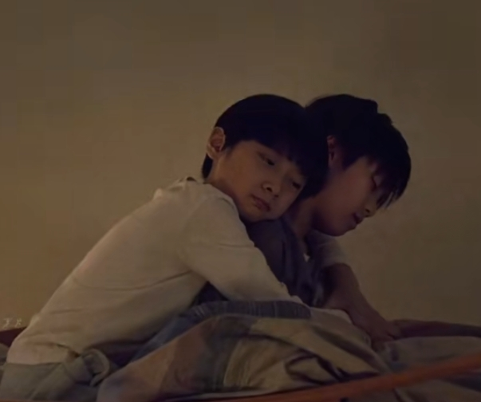
弟弟：早知道这是最后一次你抱我…
现实就是斯了也无人在意[憨笑]
“我亲爱的弟弟 我们不是被比较的标本 而是活过的人 你一定要替我成为快乐的大人”
“你弟弟会偷钱吗！？”
看完躯体化发作了[流泪]
原来爱也有清晰的市场价[流泪]
“如果我们离婚了肯定是因为你”我想这句话大部分的人都听过吧[眼含热泪]
哥哥跳楼了，死的却是弟弟[流泪]
哥哥跳楼了，死的是弟弟
几乎所有小孩都幻想过用自己的死亡来惩罚令他们伤心的大人
这独白随便摘一段下来都是精华！现代文学的精髓。
那个草莓棚回音给我笑死了[捂脸]
这位是真警察！佩穿警服！[赞][赞][赞]
长沙文旅又炸了
前面几个城市在全球赢回面子，长沙成功丢回去了[看]
我荣昌哥真的很好[快哭了] 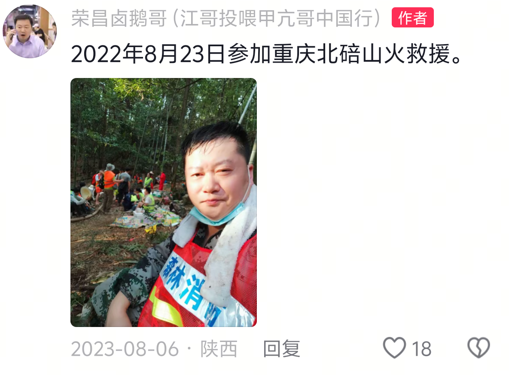
我怀疑他才是真正的甲亢哥[憨笑]
我的妈呀，就不应该让他去长沙[捂脸]
我的好友我始终比你快一步
小时候没网络到底是咋统一成这样的[尬笑]
听过的人…都不准哭哦
小时候背这个背的可努力了[憨笑]
哇哦 居然到了九年级[憨笑]小时候居然只知道到六年级[黑脸][强壮]
听过这首歌的人都当奶奶了吧[赞]
小神兽真会玩[玫瑰][比心]叔叔都跟不上时代了[抱拳][比心]以后就是小神兽的时代了[抱拳][抱拳][玫瑰]
感觉这东西小时候抱过我
看不懂的看我这个思维导图[看] 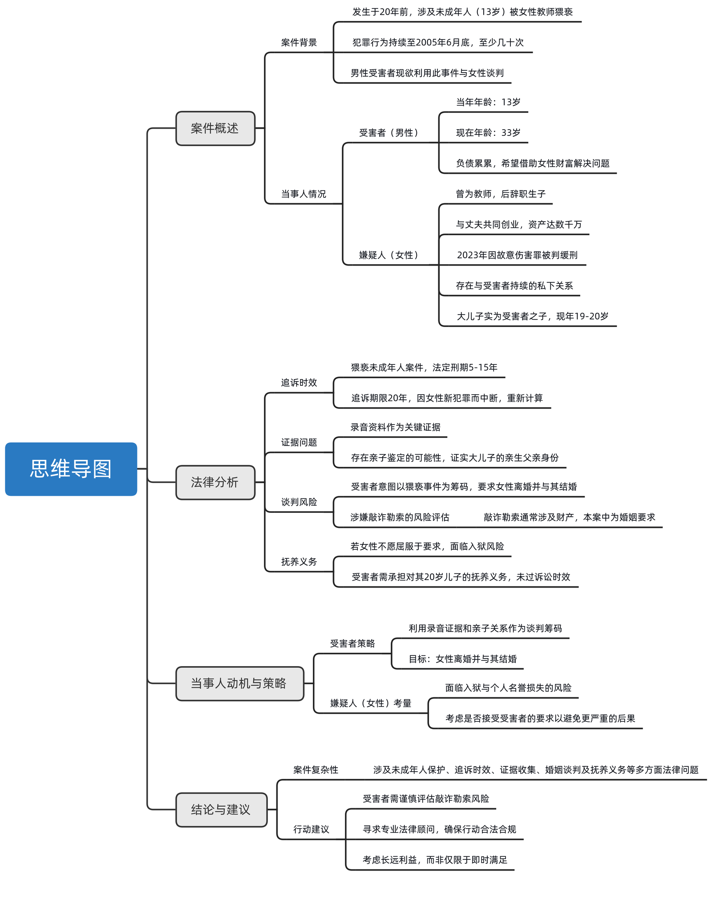
20岁儿子天塌了，富二代成负二代了[看]
我儿子13岁，天天妈我的袜子，妈我的内裤[捂脸]
女老师就是上麦本人，她把时间记得那么清清楚楚，哪有朋友的事自己记得清清楚楚。
是不是这个男的当时孩子的时候比较帅气被女老师爱上了[尬笑]
在没剃胡子之前我是不同意这桩婚事的
我一个男的 给老子哭的大鼻涕一直甩
这可是金宣虎啊 startup里战胜了南柱赫的男人[舔屏]
早这么帅不就好了，你说这事闹得[捂脸][捂脸][捂脸]
去看他的海岸村恰恰恰，超级甜。[猪头][猪头][猪头]
邓稼先夫人已90余岁，祝老人家健康
这些都是我们中国人民站起来的脊梁[感谢][感谢][感谢]
郭永怀是三体神。别的都只擅长一个或者两个领域但是郭永怀擅长所有领域
邓稼先许鹿希夫妇这都是神一样的人物
郭永怀院士是真的可惜[泣不成声]
邓稼先，尤其是郭永怀，并不能按照烈士那么简单的来对待吧！
钱学森导弹 邓稼先原子弹 于敏氢弹
可惜邓稼先原子弹之父走的有点早啊[流泪][流泪][流泪][流泪][流泪]
他们都在这里[比心][比心][比心] 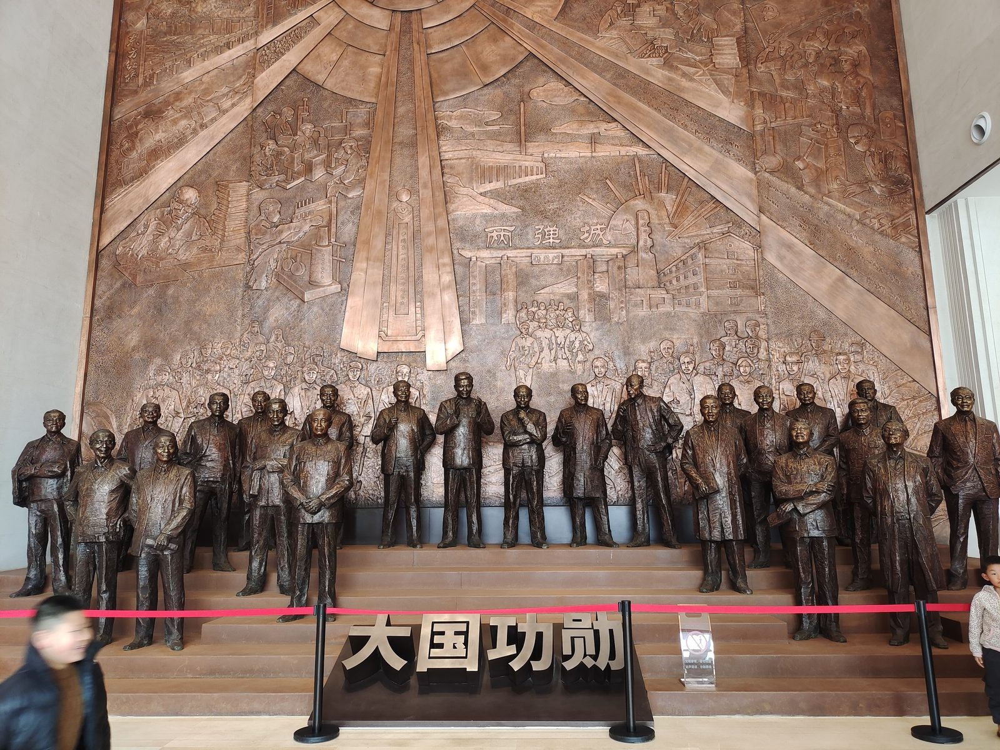
Read more: